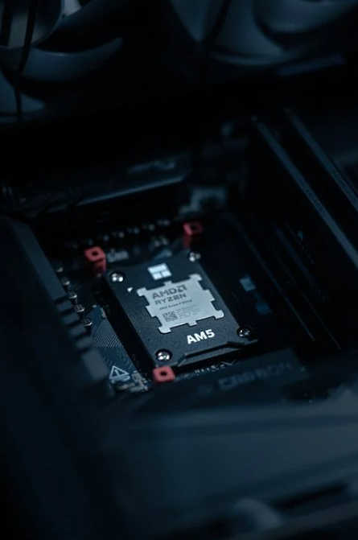

CDN，全称Content Delivery Network，即内容分发网络，是一种构建在网络之上的内容分发架构。它通过在全球各地的数据中心部署边缘服务器，使用户能够从地理位置上最接近的节点获取所需内容，从而减少了网络传输的延迟和带宽消耗。
CDN的关键技术主要包括内容存储和分发技术。其基本原理在于在用户访问相对集中的地区和网络设置缓存服务器。当用户访问网站时，CDN通过全局负载均衡技术将用户的访问请求导向距离最近的缓存服务器，由缓存服务器代替源站响应用户的请求。这样不仅减轻了源站服务器的工作压力，还使用户能够就近获取所需内容，从而改善了访问速度。
CDN系统主要由源服务器、边缘服务器、负载均衡器、DNS以及内容管理系统等关键组件构成。
源服务器（Origin Server）：
源服务器是存储网站内容的主要服务器，存放着原始的网页、图像、视频和其他静态或动态文件。当内容发生更改时，源服务器会生成新的版本，并将其传递给CDN。
边缘服务器（Edge Server）：
边缘服务器是部署在全球各地的服务器节点，构成了CDN的基础架构。每个边缘服务器都存储有一部分或全部的缓存内容，包括从源服务器获取的静态文件副本。边缘服务器负责提供内容的分发和加速，向用户提供最接近的服务器节点。
负载均衡器（Load Balancer）：
负载均衡器用于在多个边缘服务器之间均匀分配用户请求的流量。它根据不同算法（如轮询、最少连接等）将请求导向最优的边缘服务器，以实现负载均衡和高可用性。
DNS（Domain Name System）：
DNS负责解析用户请求的域名，并将其映射到最近的边缘服务器。CDN使用智能DNS解析技术，根据用户位置和网络条件来选择最优的边缘服务器，确保用户能够通过最快的路径获取内容。
内容管理系统（Content Management System）：
内容管理系统用于管理和发布网站的内容，可以与CDN集成，使更新的内容能够传递到CDN，并在边缘服务器上进行缓存。
CDN的工作原理涉及多个关键技术，包括负载均衡、缓存机制、数据传输优化、动态加速技术和安全保障等。
负载均衡：
CDN通过将用户请求分发到不同的节点，避免单一节点过载，从而保证用户请求的响应速度。负载均衡器根据用户请求的数量、服务器的负载状况以及网络条件等因素，动态调整流量分配，确保最佳性能。
缓存机制：
CDN采用缓存机制来存储源服务器上的内容副本。当用户首次请求某个资源时，CDN会从源站拉取该资源并存储在边缘节点上。之后，相同区域内的其他用户再次请求同一资源时，可以直接从边缘节点获取，无需每次都回源站拉取数据。这种缓存机制显著减少了源服务器的负载，提高了响应速度和用户体验。
数据传输优化：
CDN采用自动智能路由技术，选择最优的传输路径，避免网络拥塞，从而优化数据传输过程。智能路由技术包括DNS负载均衡、IP Anycast技术和BGP路由协议等，通过智能选择最优路径来实现请求的快速响应。
动态加速技术：
CDN不仅加速静态内容（如图片、视频、CSS、JavaScript等），还能够处理动态内容，如API调用、交互式内容和数据库查询等。通过使用Web加速技术、TCP协议优化技术、SSL加速技术等，CDN能够显著提升动态内容的传输速度。
安全保障：
CDN提供了多种安全防护机制，如DDoS攻击防护、源站防护、Web应用防火墙等，保障网站的安全。DDoS防护通过分散攻击流量来减轻分布式拒绝服务攻击的影响，确保正常用户访问不受干扰。
CDN的工作流程可以概括为以下几个步骤：
用户请求：
当用户访问一个使用了CDN服务的网站时，用户的浏览器会向DNS系统发送域名解析请求。
DNS解析：
DNS请求会被导向CDN的服务商。CDN服务商根据用户的IP地址、地理位置、网络条件等信息，智能判断出哪个边缘节点离用户最近，并将域名解析为该节点的IP地址。
请求转发：
用户的请求会被转发到最近的边缘服务器上。该边缘服务器会检查本地缓存中是否有用户请求的内容。
内容缓存与分发：
如果边缘服务器的本地缓存中没有用户请求的内容，它会从源服务器拉取该内容，并将其缓存到本地。之后，相同区域内的其他用户再次请求同一内容时，可以直接从边缘服务器获取。
内容返回：
边缘服务器将用户请求的内容返回给用户的浏览器，完成整个访问过程。
CDN具有多方面的优势，适用于各种类型的网站和应用程序。
提高用户访问速度：
CDN通过将内容缓存到离用户最近的服务器，减少了内容传输的距离和时间，显著提高了用户的访问速度。
降低网络带宽压力：
CDN将内容缓存到多个服务器上，减少了源服务器的负载，降低了网络带宽的压力。这不仅节省了成本，还提高了整体性能和可扩展性。
提高网站可用性：
CDN通过全球分布的边缘节点和智能路由技术，确保了用户能够从最近的节点获取内容，提高了网站的可用性和稳定性。即使某个边缘节点出现故障，请求也会自动切换到其他可用的节点上，防止单点故障导致整个系统不可用。
增强安全性：
CDN提供了多种安全防护机制，如DDoS攻击防护、Web应用防火墙、SSL/TLS加密等，增强了网站的安全性，防止恶意攻击，保障业务连续性。
优化用户体验：
CDN通过减少加载时间和提高响应速度，显著优化了用户体验。无论是在电子商务网站、视频网站、游戏网站还是企业网站上，CDN都能带来更好的用户体验。
CDN的应用场景非常广泛，包括但不限于：

随着技术的不断进步和互联网应用的日益丰富，CDN的未来发展趋势呈现出以下几个特点：
智能化：
CDN将更加注重智能化技术的应用，通过大数据分析和人工智能算法，实现更精准的内容分发和流量调度，进一步提升用户体验和网站性能。
安全化：
随着网络安全威胁的不断增多，CDN将加强安全防护机制，提供更加全面的安全防护服务，保障网站和用户数据的安全。
边缘计算：
边缘计算技术的发展将推动CDN向更加智能、高效的方向演进。通过在边缘节点上部署计算资源，CDN将能够提供更快速的数据处理和分析服务，满足实时性要求高的应用场景。
融合服务：
CDN将与其他网络服务进行深度融合，如云存储、云计算、物联网等，形成更加完整、高效的网络服务体系，为用户提供更加便捷、多样化的服务。
CDN作为一种高效的内容分发架构，在提高用户访问速度、降低网络带宽压力、提高网站可用性和优化用户体验等方面发挥着重要作用。通过全球分布的边缘节点、高效的缓存机制、智能的路由算法以及强大的安全措施，CDN实现了高效、快速、安全的内容分发。随着技术的不断进步和应用场景的不断拓展，CDN将继续发挥其独特优势，为互联网的发展贡献更多力量。无论是电子商务、视频直播、在线游戏还是企业应用，CDN都将成为提升性能和用户体验的关键技术之一。